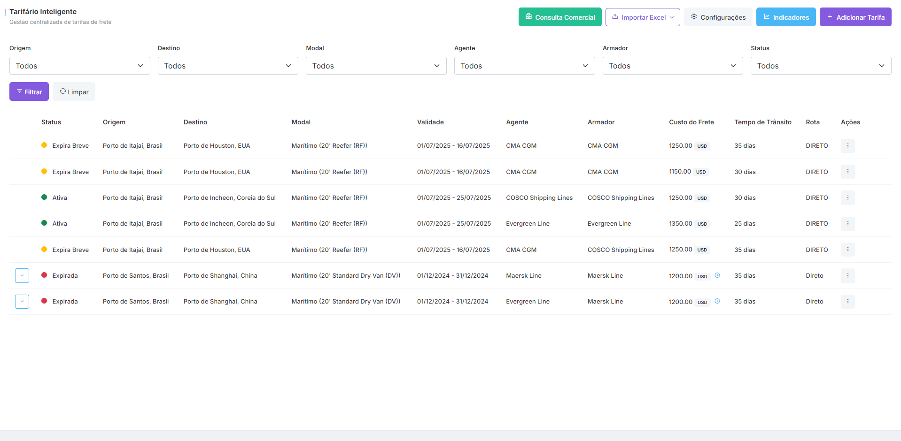
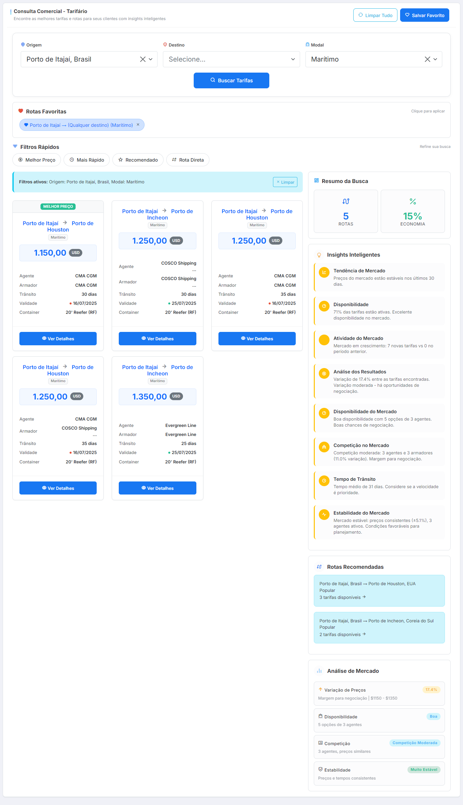

🌐 1. Visão Geral do Sistema
O Módulo Tarifário de Fretes é uma solução completa para gerenciamento de tarifas de transporte, oferecendo ferramentas avançadas para cadastro, consulta, análise e otimização de custos logísticos.
💡 Objetivo Principal: Centralizar e otimizar a gestão de tarifas de frete, fornecendo insights inteligentes para tomada de decisão comercial e operacional.
Principais Benefícios
🚀 Agilidade Operacional
Cadastro rápido de tarifas com importação em massa via Excel e atualizações em tempo real.
💰 Otimização de Custos
Compare tarifas, identifique as melhores opções e economize com insights inteligentes.
📊 Análise Detalhada
Dashboards completos com métricas, tendências e análise comparativa de desempenho.
🔍 Busca Inteligente
Encontre rapidamente as melhores tarifas com filtros avançados e sugestões automáticas.
Estrutura do Módulo
Tarifário Principal
→
Consulta Comercial
→
Análises e Indicadores
→
Configurações
💼 2. Gerenciamento de Tarifas
A tela principal do módulo permite o gerenciamento completo de todas as tarifas cadastradas no sistema.

2.1 Adicionar Nova Tarifa
Para adicionar uma nova tarifa, clique no botão + Adicionar Tarifa
Campos Obrigatórios:
- Origem: Local de partida da carga
- Destino: Local de entrega da carga
- Modal: Tipo de transporte (Marítimo, Aéreo, Rodoviário)
- Agente: Empresa responsável pelo frete
- Armador: Operador do navio (para modal marítimo)
- Tipo de Container: 20', 40', 40'HC, etc.
- Período de Validade: Data inicial e final da tarifa
- Custo do Frete: Valor e moeda
- Tempo de Trânsito: Duração estimada do transporte
- Tipo de Rota: Direta ou com transbordo
Campos Opcionais:
- Sobretaxas: Custos adicionais como combustível, segurança, etc.
- Observações: Informações complementares
⚠️ Atenção: Tarifas com data de validade expirada aparecerão com status "Expirada" em vermelho. Tarifas que expiram em até 15 dias aparecem com status "Expira Breve" em amarelo.
2.2 Editar Tarifa
Para editar uma tarifa existente:
- Localize a tarifa na lista principal
- Clique no menu de ações (três pontos) ⋮
- Selecione "Editar" ou "Clonar" para criar uma cópia
2.3 Importação via Excel
O sistema permite importação em massa de tarifas através de arquivo Excel.
Processo de Importação:
1. Baixar Template
→
2. Preencher Dados
→
3. Upload do Arquivo
→
4. Validação
→
5. Confirmação
Etapas Detalhadas:
- Baixar Template: Clique em Importar Excel → "Baixar Template"
- Preencher o Template:
- Use a linha de exemplo como referência
- Preencha todas as colunas obrigatórias
- Para sobretaxas, use o formato: "Nome:Valor:Moeda" separados por ponto e vírgula
- Upload do Arquivo: Selecione o arquivo Excel preenchido
- Validação: O sistema verifica:
- Campos obrigatórios preenchidos
- Formatos de data e valores
- Existência de locais, agentes e modalidades no sistema
- Correção de Erros: Se houver problemas, você pode:
- Editar diretamente na tela de revisão
- Corrigir o Excel e fazer novo upload
✅ Dica: O sistema importa TODAS as linhas do Excel (exceto o cabeçalho). A validação mostra o status de cada linha: Válida Aviso Erro
2.4 Filtros e Pesquisa
Use os filtros para encontrar rapidamente as tarifas desejadas:
| Filtro |
Descrição |
Exemplo de Uso |
| Origem |
Filtra por local de partida |
Santos, Shanghai, Hamburg |
| Destino |
Filtra por local de chegada |
Rio de Janeiro, New York, Rotterdam |
| Modal |
Tipo de transporte |
Marítimo, Aéreo, Rodoviário |
| Agente |
Empresa de transporte |
Maersk, MSC, Hapag-Lloyd |
| Armador |
Operador do navio |
Específico para modal marítimo |
| Status |
Situação da validade |
Ativa, Expira Breve, Expirada |
🔍 3. Consulta Comercial
A tela de Consulta Comercial é otimizada para o time de vendas encontrar rapidamente as melhores opções de frete para seus clientes.

3.1 Busca Inteligente
Interface simplificada com três campos principais:
🔎 Campos de Busca
- Origem: De onde sai a carga
- Destino: Para onde vai a carga
- Modal: Como será transportada (opcional)
Filtros Rápidos:
Após a busca, use os filtros rápidos para refinar os resultados:
- 💰 Melhor Preço - Ordena por menor custo
- ⚡ Mais Rápido - Ordena por menor tempo de trânsito
- ⭐ Recomendado - Melhor custo-benefício
- 🚛 Rota Direta - Apenas rotas sem transbordo
3.2 Rotas Favoritas
Salve suas buscas mais frequentes para acesso rápido:
- Faça uma busca com os filtros desejados
- Clique em ❤️ Salvar Favorito
- Dê um nome descritivo (ex: "Santos - Hamburg Marítimo")
- A rota aparecerá na seção "Rotas Favoritas" para acesso com 1 clique
💡 Dica: Use favoritos para rotas que você cotiza frequentemente. Isso economiza tempo e garante consistência nas consultas.
3.3 Insights de Mercado
O sistema fornece análises inteligentes baseadas em dados reais:
Métricas em Tempo Real:
📊 Análise de Mercado
- Variação de preços (últimos 30 dias)
- Disponibilidade de tarifas
- Tendência de mercado
💡 Insights Inteligentes
- Melhor época para contratar
- Alternativas de rota
- Oportunidades de economia
🎯 Rotas Recomendadas
- Mais populares
- Melhor custo-benefício
- Maior disponibilidade
Análise Comparativa:
Ao visualizar os resultados, o sistema mostra:
- Comparação de Preços: Visualize a variação entre diferentes agentes
- Tempo vs Custo: Analise o trade-off entre rapidez e economia
- Histórico: Veja como os preços evoluíram nos últimos meses
📈 4. Indicadores e Análises
Acesse o dashboard de indicadores clicando em 📊 Indicadores
4.1 Métricas Principais
💰 Média de Frete Multi-moeda
Valor médio das tarifas por moeda, com análise de variação percentual em relação ao período anterior.
⏱️ Tempo Médio de Trânsito
Duração média dos transportes, permitindo identificar rotas mais rápidas e gargalos.
✅ Tarifas Ativas
Quantidade de tarifas vigentes, com acompanhamento de crescimento ou redução.
⚠️ Tarifas a Expirar
Alerta para tarifas que vencerão nos próximos 30 dias, permitindo ação preventiva.
4.2 Gráficos e Relatórios
Tipos de Análise Disponíveis:
| Gráfico |
Informação |
Utilidade |
| Evolução do Custo |
Tendência de preços ao longo do tempo |
Identificar melhor momento para negociar |
| Distribuição por Modal |
Percentual de tarifas por tipo de transporte |
Entender mix de modalidades |
| Top Agentes |
Ranking por custo e tempo de trânsito |
Identificar parceiros mais eficientes |
| Heatmap de Rotas |
Densidade e custo médio por rota |
Visualizar rotas mais utilizadas |
| Melhores Opções |
Tabela com melhor custo-benefício |
Decisão rápida e informada |
🎯 Filtros Disponíveis: Período (7, 30, 90, 180, 365 dias), Modalidade e Rota específica
⚙️ 5. Configurações
Gerencie os dados mestres do sistema através do menu ⚙️ Configurações
5.1 Agentes e Armadores
Cadastre e gerencie as empresas de transporte:
- Nome: Razão social ou nome fantasia
- Contato: Pessoa responsável
- Email: Para comunicação
- Telefone: Para urgências
⚠️ Importante: Um agente pode atuar também como armador. O sistema permite usar a mesma empresa em ambos os campos.
5.2 Localizações
Gerencie portos, aeroportos e cidades:
Tipos de Localização:
- Origem - Apenas pode ser usado como ponto de partida
- Destino - Apenas pode ser usado como ponto de chegada
- Ambos - Pode ser origem ou destino
5.3 Modalidades
Configure os tipos de transporte disponíveis:
Modalidades Padrão:
- 🚢 Marítimo - Transporte por navio
- ✈️ Aéreo - Transporte por avião
- 🚚 Rodoviário - Transporte por caminhão
- 🚂 Ferroviário - Transporte por trem
5.4 Tipos de Container
Configure os tipos de container e suas modalidades aplicáveis:
| Tipo |
Descrição |
Modalidades |
| 20' |
Container padrão 20 pés |
Marítimo |
| 40' |
Container padrão 40 pés |
Marítimo |
| 40'HC |
High Cube (maior altura) |
Marítimo |
| Reefer |
Container refrigerado |
Marítimo |
| Carga Geral |
Sem container específico |
Todas |
💡 6. Dicas e Boas Práticas
Para Máxima Eficiência:
📥 Importação em Massa
- Use o template Excel para importar múltiplas tarifas de uma vez
- Mantenha uma planilha mestre atualizada para reimportações
- Valide os dados antes do upload para evitar erros
🔄 Manutenção de Dados
- Revise tarifas próximas ao vencimento semanalmente
- Use a função "Clonar" para renovar tarifas com pequenos ajustes
- Mantenha as configurações (agentes, locais) sempre atualizadas
📊 Análise Estratégica
- Consulte os indicadores mensalmente para identificar tendências
- Compare períodos para negociar melhores condições
- Use os insights de mercado para antecipar mudanças
Atalhos Úteis:
⌨️ Teclas de Atalho:
- Ctrl + F - Focar nos filtros
- Esc - Fechar modais
- Enter - Confirmar ações
Resolução de Problemas Comuns:
| Problema |
Causa |
Solução |
| Erro na importação Excel |
Formato incorreto ou dados faltando |
Use o template fornecido e preencha campos obrigatórios |
| Tarifas não aparecem na busca |
Filtros muito restritivos ou tarifa expirada |
Limpe os filtros e verifique as datas de validade |
| Não consigo deletar localização |
Está sendo usada em tarifas |
Remova ou edite as tarifas primeiro |
🎯 Lembre-se:
O sucesso do módulo depende da qualidade dos dados inseridos. Mantenha as informações sempre atualizadas e completas para obter os melhores resultados!
Módulo Tarifário de Fretes - Sistema SIRIUS
●
Desenvolvido com excelência para otimizar sua operação logística
●